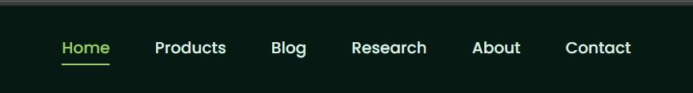
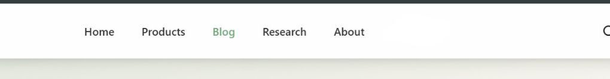
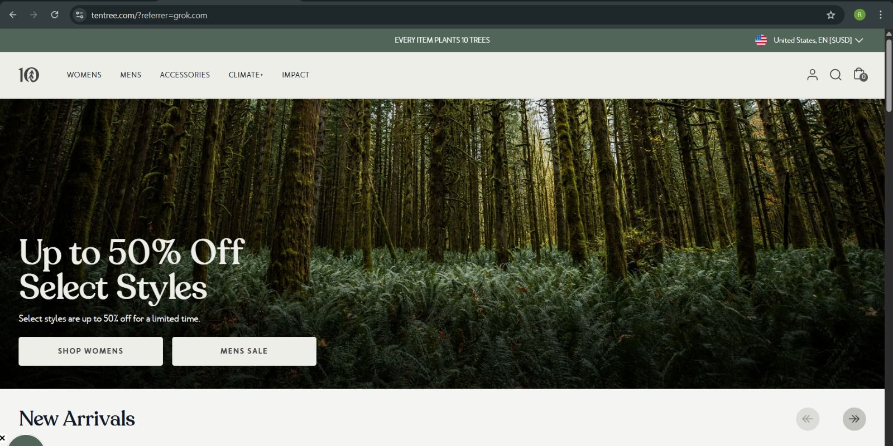
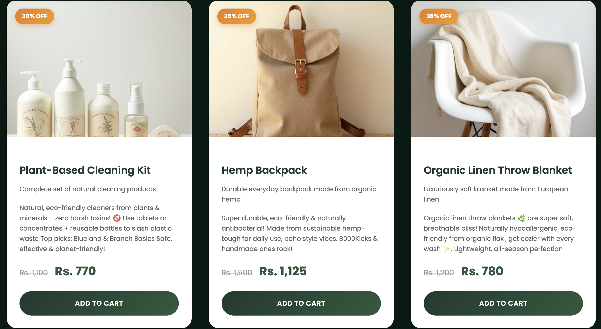
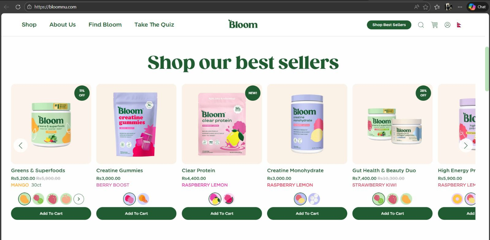
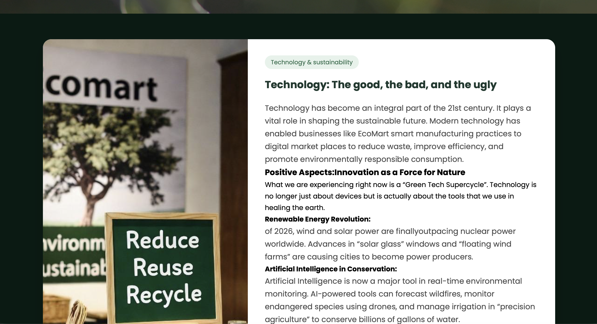

How we built EcoMart — inspired by the best, improved for Nepal and sustainability
We studied leading sustainable e-commerce websites to create something even better. Below are real screenshots and comparison tables showing how our navigation bar, homepage, and product page were inspired — and improved — for a cleaner, calmer, and Nepal-focused experience.


After researching popular sustainable e-commerce websites, we designed our navigation bar to be simple, clean, and user-friendly. We took inspiration from well-known eco-brands like Patagonia, and Allbirds, which have a dark horizontal bar with the logo on the center. We liked this layout because it is easy to understand and works well on both desktop and mobile. Our navigation bar follows the same structure but we made it even better by using a softer dark green color, adding an active link underline (in green), and making it sticky so it stays at the top when scrolling. This makes navigation faster and more comfortable for users while keeping the calm, nature-inspired feel of EcoMart. The final result is modern, professional, and perfectly matches our sustainable brand identity.


After researching successful sustainable e-commerce websites, our team took strong inspiration from Tentree for the homepage design. Tentree has a clean, dark green horizontal navigation bar with the logo on the left, simple menu links in the center, and search/cart icons on the right a layout that is easy to use and looks professional. We liked how it stays fixed (sticky) when scrolling, so users can always navigate quickly. For the homepage, Tentree uses a full-screen nature background with a bold eco-message (“Every Item Plants 10 Trees”) and clear call-to-action buttons. We used these ideas as a base but improved them for EcoMart: we chose a softer green color for the nav bar, added an active link underline for better feedback, and made the homepage hero calmer with more white space, a personal founder story, and our own tree-planting promise (“One Purchase = One Tree”). This made our design feel warmer, more Nepal-focused, and easier on the eyes while keeping the same professional and sustainable vibe.


After researching popular sustainable e-commerce websites, we found a beautiful product page design that inspired our own layout. The reference website (bloom.com) uses a clean grid of product cards with discount badges in circles, short descriptions, prices, and “Add to Cart” buttons — all with a soft green background and nature elements. We loved how it feels calm, modern, and focused on the products themselves. We took these ideas for EcoMart’s Product Page: a responsive grid of cards with images, sale badges, descriptions, sizes, and hover effects to make shopping engaging. We improved it by adding more breathing space, emoji in descriptions, and our unique Nepal-focused green theme. This makes our product page easier to read, less cluttered, and more inviting for conscious buyers while keeping the professional look of the reference site.

For the Blog page, we researched successful and popular blogs from the article “50+ Best Examples of Popular Blogs in 2024” on (firstGuide.com). We studied lifestyle, eco, and sustainable blogs like Ecomart and Sustainable development clean layout, easy-to-read articles, beautiful images, and simple navigation. We took these ideas and created our own Blog page for EcoMart a clean, minimal design with a dark green theme, big readable headings, short summaries. We made it better by focusing on sustainability topics (eco-tips, material stories, green living in Nepal). This keeps the blog consistent with EcoMart’s calm and trustworthy look while educating users about sustainable choices.
| Aspect | Inspired Website (Tentree / Allbirds) | Our Website (EcoMart) | Similarities | Our Improvements |
|---|---|---|---|---|
| Navigation Bar | Horizontal, dark, logo left, links center, icons right | Horizontal, dark green, sticky with blur effect | Structure & placement | Softer green tones, active underline, Nepal-inspired |
| Homepage Hero | Dark nature background, big image, bold eco-message | Gradient overlay, personal founder story, tree promise | Big nature image & eco-focus | Calmer colors, more space, Nepal connection |
| Product Page Layout | Grid-based, product-focused | Responsive grid with hover lift & zoom | Grid layout | More white space, less clutter, size info & emoji descriptions |
| Color Scheme | Dark forest green, natural tones | Earthy green gradient with white text | Green/nature theme | Softer & less eye strain, Nepal-inspired palette |
| Footer | Simple links & copyright | Centered title, 3 feature icons, SHOP NOW button | Basic links | Added impact features (Organic, Zero Waste, Carbon Neutral) |